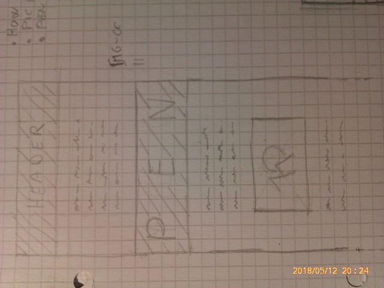
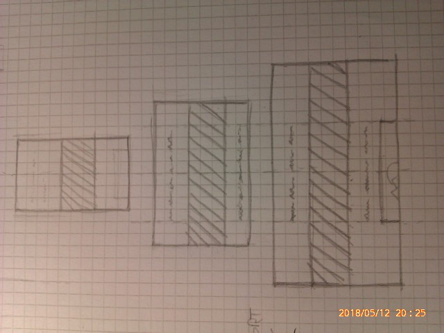

Playing With Pen Heights
For the articles template for my new site, I wanted to have bold bleeding pens, spanning the full browser viewport width, something along these lines:

The pens are fluid by default, expanding to fit their parent container width, but their height is fixed, you have to pick a value when you get the HTML embed code from the wizard. But keepeing the same height for every viewport width doesn’t look so nice:

Yes, we can make a pen resizeable by the user, but I did’t need that.
Soon I realized that what I really wanted was a full viewport width constant aspect ratio pen, a mouthful to say that the pen must span the entire viewport width but its height must adapt to preserve a prescribed aspect ratio:

Ok, this looks better, but on a large viewport the pen can become too huge, both in with and in height. Maybe it could even overflow the browser viewport and that’s bad:

So, what about preventing this by limiting the maximum width of a pen?

Definitely better. And while we are here, why don’t we let the pen cover a prescribed fraction of the viewport width?

In particular we could have even full viewport pens:

Enough doodling, here’s a demo that shows all these kinds of pens:
[The pen]()
Before seeing how to implemtent this, let’s take a look at the embedding code for a pen.
Anatomy of a pen embed
The HTML markup we get from the wizard looks like this:
<!-- embed code here -->See that data-height attribute in the first snippet? It’s filled with the height value got from the wizard.
When the page loads thescript gets loaded and replaces the above snippet with the real pen markup, which consists in a wrapped iframe:
...whose height is set with the value found in the data-height attribute.
.cp_embed_wrapper iframe {
height: ...;
}This is the spot we are going to override to customize the pen’s heights.
Full viewport width pens with constant aspect ratio
Let’s begin by introducing a couple of CSS classes to specify our custom pens, pen and pen--full-vp-width.
As just seen, the embed code is replaced by javascript so we are going to wrap the embed code in a container and apply the classes to this element:
<div class="pen pen--full-vp-width">
<!-- pen code -->
</div>We assign the following properties to the classes:
.pen {
--aspect-ratio: calc(21 / 9);
}
.pen--full-vp-width .cp_embed_wrapper iframe {
height: calc(100vw * 1 / var(--aspect-ratio));
}In the .pen class we specify a default aspect ratio with a CSS variable. I picked a 21:9 value, meaning that the pen width and height will respect the proportion width : height = 21 : 9. This default ratio can be overridden for each pen as needed as we’ll see in a moment.
Given the aspect ratio value, we can set the correct height value with calc(), just using the above proportion. The pen is always as large as the viewport so, using the viewport units, we get that 100vw : height = 21 : 9, or, using the CSS variable, 100vw : height = var(--aspect-ratio), from which w get that height = 100vw * 1 / var(--aspect-ratio).
To specify a different aspect ratio we can override the default value using inline styles:
<div class="pen pen--full-vp-width" style="--aspect-ratio: calc(2 / 1);">
<!-- embed markup here -->
</div>We’re done. Almost. If you take your time to measure the pens, you can see that sometimes the prescribed aspect ratio is not exactly met. This happens when the browser vertical scrollbar is visible. In this case, the scrollbar is rendered inside the viewport area, but while the pen width reduces to account for the scrollbar, the 100vw value still refers to the entire viewport width instead, [like if the scrollbar was not there](), and this little difference between the pen real width and the reported viewort width causes a little error in the height calculation. Anyway, visually this error is not noticeable and we’are completely happy with it.
Another picky observation about the sizes is that the iframe parent element, .code_embed, has not the same exact height as it child. This is because the iframe display mode is inline, so some pixels are added to the height of its parent. Again, not a big issue, we could overlook it, but just to be clean , we can get rid of that extra pixels simply by ovverriding the iframe display mode:
.pen--full-vp-width .cp_embed_wrapper iframe {
display: block;
/* ... */
}So, we get it, a nice constant aspect ratio pen, chech its behavior in the demo pen.
Limiting the width
Not surpisingly, we can use the max-width property to limit the .pen container:
.pen {
...
--maxwidth: 99999px;
max-width: var(--max-width);
margin: 0 auto;
}Again, we used a CSS variable for the target maximum width. A very large dummy values is used as a flag to indicate that a pen must bleed edge to edge by default. To limit the pen width we can override this value with inline styles:
<div class="pen pen--full-vp-width" style="--aspect-ratio: calc(16 / 9); --max-width: 1000px;">
<!-- pen code -->
</div>The auto margins make sure the pen will be horizontally centered.
Now the pen doesn’t exceed the prescribed width, but its aspect ratio is not preserved anymore. This is because in the calc() formula for the height property, viewport units were used. So, as long as the pen has the same width as the viewport the formula is correct, bt as soon as the viewport grows larger of the maximum pen width, the 100vw represents a value larger than the real pen width, and so the comupted pen height is bigger of what it should be. What we want instead, is to stop growing the height when the pen reach its maxium width, and we can get this by adding a max-height property to the iframe:
.pen--full-vp-width .cp_embed_wrapper iframe {
display: block;
height: calc(100vw * 1 / var(--aspect-ratio));
max-height: calc(var(--max-width) * 1 / var(--aspect-ratio));
}We took the cacl() formula for the height and replaced the 100vw factor with the target maximum width, obtainig the correct height value corrispondent to that max width and for the current aspect datio.
Finally, this formula works even for a bleeding pen, because the very large default value used for --max-width implies a very large max-height that in practice doesn’t limit the the pen height at all.
Full(or partial) viewport height pens
As before, let’s first introduce a new CSS class for these pens, let’s call it pen--vp-height:
<div class="pen pen--vp-height">
<!-- Pen -->
</div>And, once again, let’s resort to a CSS variable to specify the default height for this kind of pens:
.pen--vp-height {
--vp-height: 100vh;
}This way we have a pen covering the entire browser viewport. To customize the height this for a given pen, inline styles may help us one more time:
<div class="pen pen--vp-height" style="--vp-height: 50vh;">
<!-- Pen -->
</div>The CSS for the iframe is the simplest so far:
.pen--vp-height .cp_embed_wrapper iframe {
height: var(--vp-height);
}That’s it!
Support
The majority of recent versions of desktop and mobile browsers have not problems with the CSS features employed. Internet Explorer 11 supports calc() and viewport units but not CSS variables.
References
Here are some info from the CodePen documentation about embedding pens and sizing them: